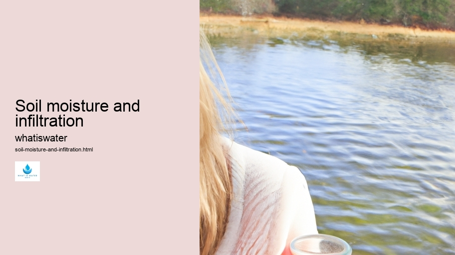

Hydrological Cycle
Hydrological Cycle
Evaporation and transpiration
Condensation and cloud formation
Precipitation and rain patterns
Surface runoff and river systems
Groundwater flow and aquifers
Snowmelt and glacial processes
Water storage in oceans lakes and reservoirs
Soil moisture and infiltration
Water balance and budgeting
Human impact on the hydrological cycle
Marine Ecosystems
Marine Ecosystems
Coral reefs and their biodiversity
Mangrove forests as coastal protectors
Ocean currents and climate regulation
Deepsea habitats and extremophiles
Intertidal zones and estuarine ecosystems
Marine food webs and trophic levels
Freshwater Ecosystems
Freshwater Ecosystems
Conservation efforts for marine species
Marine biogeochemical cycles
Impact of global warming on oceans
Water Resource Management
Water Resource Management
Rivers streams and creeks ecosystems
Lakes ponds wetlands habitats
Biodiversity in freshwater environments
Aquatic plants role in oxygenation
Freshwater fish species diversity
Invasive species impact on freshwater systems
Pollution threats to freshwater sources
Conservation strategies for freshwater biomes
Role of wetlands in flood control
Importance of riparian buffers
Cultural Significance of Water
Cultural Significance of Water
Sustainable water use practices
Desalination technologies for fresh water supply
Wastewater treatment processes
Rainwater harvesting techniques
Management of water during drought conditions
Transboundary water resource politics
Infrastructure for water distribution
Agricultural irrigation efficiency
Urban water demand management
Impact of climate change on water resources
About Us
Contact Us

Soil moisture and infiltration
Molecule
Soil moisture and infiltration are fundamental concepts within the field of hydrology, significantly impacting agriculture, water management, and environmental protection. Soil moisture refers to the presence of water contained in the spaces between soil particles.
Soil moisture and infiltration - Hydroponics
Irrigation
Irrigation
Irrigation
This aspect is crucial for plant growth, as it determines the availability of water to roots. On the other hand, infiltration is the process through which water on the ground surface enters into the soil.
In discussing soil moisture, it's essential to consider its dynamic nature—it fluctuates with precipitation events, evaporation rates, and plant uptake.
Hydroponics
The capacity of soil to retain moisture depends on several factors including texture, structure, organic matter content, and current weather conditions.
Irrigation
Sandy soils tend to have lower moisture retention due to larger pore spaces that allow for quick drainage; conversely, clay soils hold water more effectively because of their smaller pores.
Infiltration is a complex phenomenon influenced by numerous variables such as soil type, land cover, topography, and rainfall intensity. When rain falls on permeable surfaces like forests or grasslands where there is abundant vegetation cover and healthy soil structures; much of it might infiltrate into the ground replenishing groundwater reserves. However when rain encounters impervious surfaces like paved roads or compacted land; infiltration rates decrease dramatically leading instead towards increased surface runoff which can cause erosion and flooding issues.
Monitoring soil moisture has become increasingly important given climate change scenarios predicting altered precipitation patterns and potential droughts across various regions globally. Farmers rely heavily upon accurate measurements for irrigation scheduling ensuring they deliver just enough water for crops without wasting resources or causing unnecessary leaching nutrients from farmlands into local streams rivers.
Advancements in technology have allowed scientists engineers develop sophisticated sensors remote sensing techniques track changes in real-time providing valuable data decision-makers managing natural man-made systems alike.
Lastly understanding interactions between these two processes vital not only agricultural productivity but also maintaining ecological balance preventing disasters ensuring sustainable use finite freshwater supplies we continue strive harmonious coexistence our environment.
Hydrological Cycle
Check our other pages :
Importance of riparian buffers
Water storage in oceans lakes and reservoirs
Water Resource Management
Frequently Asked Questions
What is soil moisture and why is it important in the context of the water cycle?
Soil moisture refers to the water held within the spaces between soil particles. It plays a crucial role in the water cycle by influencing various processes such as infiltration, evaporation, transpiration, and runoff. Healthy levels of soil moisture support plant growth, regulate surface temperature, and maintain ecosystems.
How does infiltration affect soil moisture levels?
Infiltration is the process by which water on the ground surface enters into the soil. The rate at which this occurs depends on factors like soil texture, structure, vegetation cover, and precipitation intensity. Effective infiltration replenishes soil moisture reserves necessary for plants and contributes to groundwater recharge.
How do changes in land use impact soil moisture and infiltration rates?
Land use changes such as urbanization, deforestation, agriculture expansion can significantly alter natural patterns of soil moisture and infiltration. These activities often lead to increased impervious surfaces that reduce infiltration rates, enhance runoff, decrease groundwater recharge, disrupt natural hydrological cycles, and can exacerbate droughts or floods.